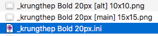
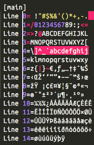

Font Conversion Guide
Keep in mind: This is meant for older versions like anything below StepMania 4.
To begin, you'll need to have a ini file already exported of the font you want to convert.
Open that file with the text editor of your choice, and head down to the segment, where
You could just, load the font directly on StepMania, and just use it. Right?
Well, no. Older StepMania's did not have a way to appropiate Row Intergers in font files. So, because of the spacing of the first 10 lines, it will cause a crash.
The way to fix this, is by simply deleting a space on those first 10 lines, like so.
And with that, the font is ready to go for older versions of StepMania!